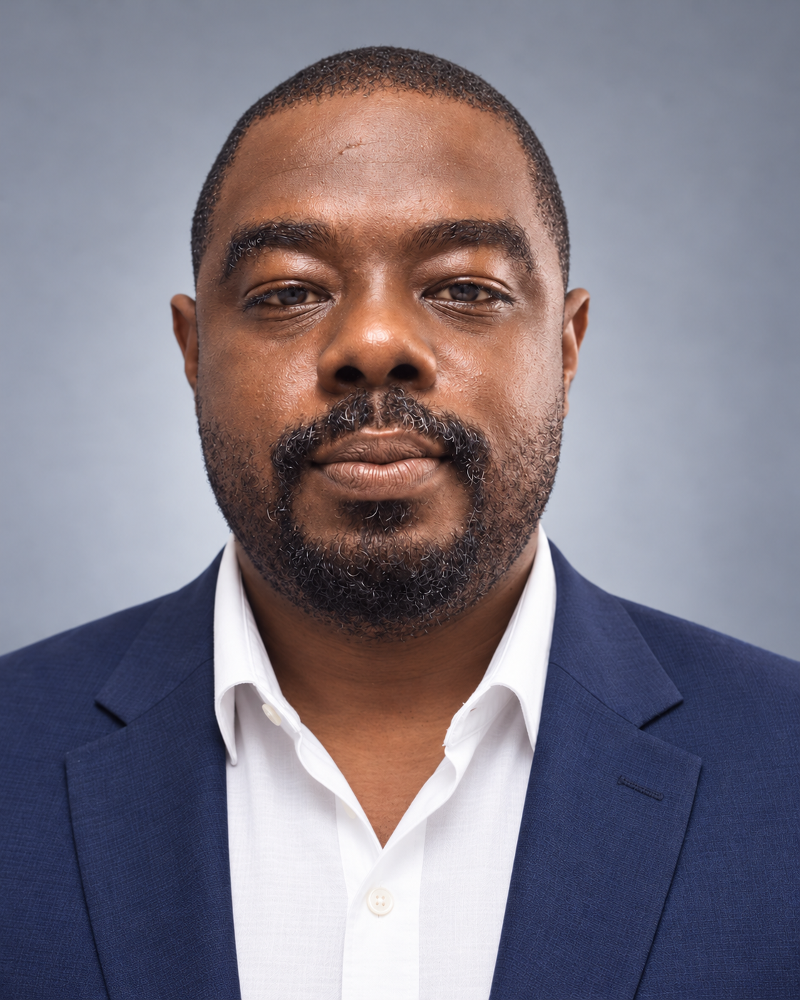

Secure infrastructure
Networks, servers, identity, backup and business continuity.
BARBADOS · ACROSS THE CARIBBEAN
I’m Wafiq Harris-Ashby. I connect technology, security and operations to build reliable systems and make everyday work better.

01 / THE APPROACH
Good technology should solve a real problem, work securely and grow with the people who use it.
My work spans banking, retail, hospitality and regional scientific services. From administering Windows and Linux environments to leading teams and developing applications, I bring hands-on technical depth and an operational perspective.
I work closely with users, colleagues and clients to turn complex requirements into useful, maintainable and resilient systems.
Networks, servers, identity, backup and business continuity.
Project delivery, team development and better workflows.
Web applications, data tools and WordPress automation.
02 / SELECTED WORK
A selection of infrastructure, security and software work from my career.
POINT SOLUTIONS · INFRASTRUCTURE
Jointly led the Federal Bookmakers network redesign: centralized cabling and switching, high-availability servers, site-to-site VPNs, segmented VLANs and domain-based access.
CIBC CARIBBEAN · AUTOMATION
Developed automated risk analysis and reporting frameworks, supported risk remediation teams and assisted with AIOps for banking applications.
CIMH · WEB & DATA
Developed web applications and databases supporting climate, weather and hydrological information. Helped automate modelling outputs and their online presentation.
KFC FRENCH GUIANA · OPERATIONS
Supported the first KFC franchise in French Guiana with network planning, secure resource access, process automation, sales analysis and employee scheduling.
03 / THE TOOLBOX
My WordPress plugin collection. Built around the everyday work of running and connecting a website.
Have an integration in mind? Let’s talk ↗
04 / THE JOURNEY
From regional science and hospitality to enterprise banking, each role has added a new perspective.
Full résumé ↓JUL 2025 — JAN 2026
Banking application support, automated risk reporting, system monitoring and AIOps collaboration.
SEP 2024 — MAR 2025
First-line support for 300–400 employees, user administration, troubleshooting and technical guidance.
JUN 2017 — MAR 2024
Technical leadership, project management, team mentoring, secure infrastructure design and client consultation.
MAR 2016 — JAN 2017
Network recovery and modernization, security controls, branch connectivity and backup systems.
APR 2010 — AUG 2016
Web applications, scientific databases, Windows and Linux infrastructure, and user support.
05 / ALWAYS LEARNING
Edinburgh Napier University · In progress
Study across cybersecurity, leadership, data analytics and IT support through ISC2, InfoSec, IBM, Cisco, Google, Kennesaw State University and the University of Illinois Urbana-Champaign.
06 / LET’S CONNECT
Let’s talk about your next project.
Technology leadership, infrastructure, security, software development or a WordPress integration. I’d like to hear what you’re working on.
wafiq.harris-ashby@outlook.com ↗Saint James, Barbados · Atlantic Standard Time